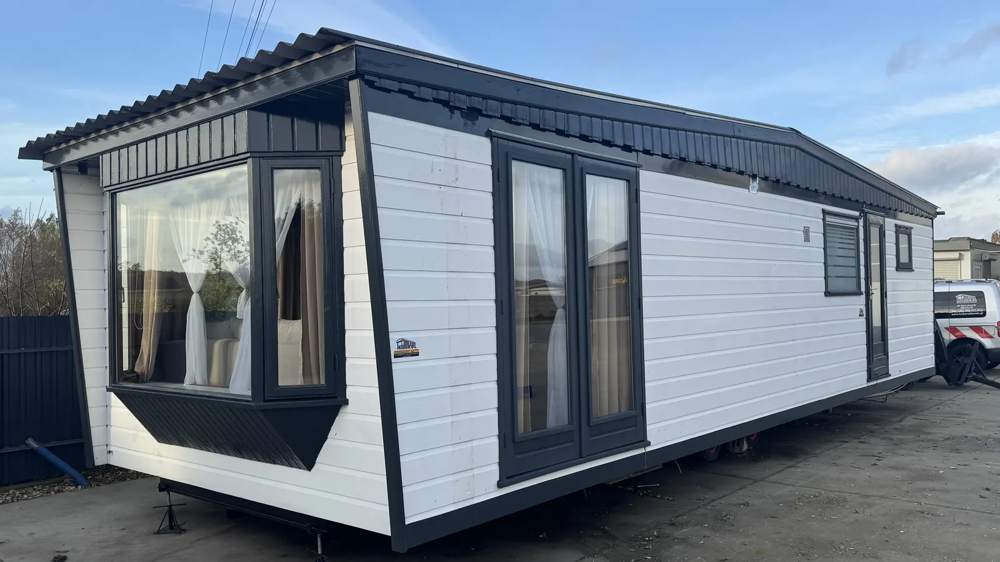
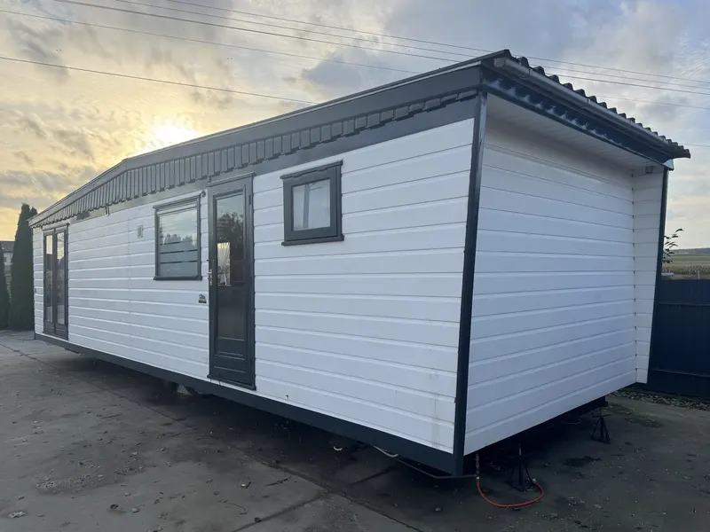

Domki angielskie
Cosalt Riverdale
2 pokoje1 łazienka3,70 x 11,00 m
Ogrzewanie: centralne ogrzewanie gazowe

Sprowadzamy używane domki z Holandii, Belgii, Niemiec i Wielkiej Brytanii. Każdy ma sprawdzoną instalację elektryczną, gazową i wodną, jest szczelny, czysty i pachnący.
Przywozimy, wprowadzamy na działkę i poziomujemy.
Zakup na raty: zapytaj telefonicznie.
Stale 30-40 domkówna placu w Osówce koło Żuromina.
Pn-pt 9-17, sob. 10-15
Domki angielskie
2 pokoje1 łazienka3,70 x 11,00 m
Ogrzewanie: centralne ogrzewanie gazowe
Domki angielskie
2 pokoje1 łazienka3,70 x 9,75 m
Ogrzewanie: gazowe
Domki angielskie
2 pokoje1 łazienka3,70 x 11,40 m
Ogrzewanie: centralne ogrzewanie gazowe
Domki angielskie
2 pokoje2 łazienki3,70 x 12,00 m
Ogrzewanie: centralne ogrzewanie gazowe
Domki angielskie
2 pokoje2 łazienki3,70 x 11,40 m
Ogrzewanie: centralne ogrzewanie gazowe
Domki angielskie
2 pokoje2 łazienki3,70 x 11,70 m
Ogrzewanie: centralne ogrzewanie gazowe
Domki angielskie
2 pokoje1 łazienka3,70 x 12,30 m
Ogrzewanie: centralne ogrzewanie gazowe
Domki angielskie
3 pokoje2 łazienki3,70 x 11,70 m
Ogrzewanie: centralne ogrzewanie gazowe
Domki angielskie
2 pokoje2 łazienki3,80 x 11,70 m
Ogrzewanie: centralne ogrzewanie gazowe
Domki angielskie
3 pokoje2 łazienki3,70 x 10,80 m
Ogrzewanie: gazowe
Domki angielskie
2 pokoje2 łazienki3,70 x 11,80 m
Ogrzewanie: centralne ogrzewanie gazowe
Domki angielskie
3 pokoje1 łazienka3,70 x 11,00 m
Ogrzewanie: gazowo-elektryczne
Domki angielskie
3 pokoje2 łazienki3,70 x 11,30 m
Ogrzewanie: elektryczne
Domki angielskie
2 pokoje2 łazienki3,70 x 10,80 m
Ogrzewanie: gazowo-elektryczne
Domki angielskie
2 pokoje1 łazienka3,10 x 9,80 m
Ogrzewanie: centralne ogrzewanie gazowe
Domki drewniane
2 pokoje1 łazienka3,60 x 9,70 m
Ogrzewanie: gazowe nadmuchowe
Domki drewniane
2 pokoje1 łazienka3,65 x 10,70 m
Ogrzewanie: centralne ogrzewanie gazowe
Domki holenderskie
2 pokoje1 łazienka3,50 x 8,15 m
Ogrzewanie: gazowe
Domki angielskie
2 pokoje1 łazienka3,70 x 9,85 m
Ogrzewanie: gazowo-elektryczne
Domki holenderskie
1 pokój1 łazienka3,13 x 8,20 m
Ogrzewanie: gazowe
Wszystkie domki można obejrzeć na placu. Właściciel oprowadza po każdym z nich i szczerze mówi, jeśli coś jest nie tak.
Najczęściej wybierane: szerokość 3,70 m, długość od ok. 9,8 do 12,3 m, wersje całoroczne z centralnym ogrzewaniem gazowym i sezonowe. Willerby, Cosalt, ABI, Swift, Carnaby.
Węższe, o szerokości ok. 3,1-3,5 m i długości ok. 8 m. Najtańsze domki na placu, sezonowe z ogrzewaniem gazowym.

Całoroczne domki z białym sidingiem i grafitowymi wykończeniami, np. Delta z wykuszem i dwuskrzydłowymi drzwiami.
Najważniejsze jest dla nas, żeby domek był szczelny i od razu gotowy do zamieszkania. Dlatego każdy domek sprawdzamy, zanim pojawi się w ofercie.
Akcesoria na zamówienie: zadaszenia, tarasy, podesty, schodki, altanki i kobyłki do poziomowania. Do samodzielnego montażu albo z montażem, cena ustalana indywidualnie.
Kupiliśmy domek holenderski 11 listopada. Po tygodniu Pan Hubert z bratem przywiózł go do nas na działkę. Była godz. 23 i sypał śnieg. Ustawiali na działce prawie do pierwszej w nocy.
Katarzyna
Oglądaliśmy domki w wielu miejscach, aż trafiliśmy do was. Domki czyste bez nieprzyjemnych zapachów. Zdjęcia odzwierciedlają to, jak wyglądają na żywo.
Tom, Trójmiasto
Solidna firma, która oferuje fachową pomoc w rozładunku domku i prawidłowym ustawieniu go na działce, nawet w bardzo trudnych warunkach.
Daria Natalia
Transport, doradztwo, kontakt oraz obsługa na najwyższym poziomie. Z czystym sumieniem polecam współpracę z chłopakami, znają się na rzeczy.
Sergiusz
Właściciel szczery i konkretny. Służy radą i pomocą, jeśli taka jest potrzebna. Szczerze polecam Huberola.
Iza
Plac sprzedażyOsówka 23, 09-304 Lubowidz, woj. mazowieckie
Telefon+48 608 077 613
E-mailbiuro.huberol@gmail.com
poniedziałek - piątek9:00 - 17:00sobota10:00 - 15:00niedzielapo umówieniu telefonicznym